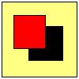

You are here: Editor project page > Adding basic CSS 1 Support to the Editor
Adding basic CSS 1 Support to the Editor
Daniel Glazman
Netscape Communications
<glazman@netscape.com>
last modification : 02 february 2001
follow-up in netscape.public.mozilla.editor
Abstract
This document contains a proposal for the addition of CSS 1 support to the Editor. It describes the extensions the editor needs to become an HTML+CSS wysiwyg editor useable by document providers writing HTML documents without breaking the behavior expected by mail/news client users (text or text+pure HTML messages, no CSS for the moment).
Short introduction to CSS
The Cascading Style Sheets Level 1 have been introduced by H. Lie and B. Bos in 1996 as one of the first attempts to separate content and presentation on the web, using a very simple, clear and human readable language. CSS is not an XML-based language.
CSS styles can be applied to HTML documents using two different mechanisms:
- Inline styles. The CSS style declarations are attached to a given
HTML element using its STYLE attribute. For instance :
<p style="color : red">The text of this paragraph is red</p>
- Rules. A rule is made of conditions (the selectors) and declarations. The
selector determines the elements of the document tree that the declarations
will apply to. Rules can be embedded in the document (using a STYLE
element), or contained in an external stylesheet (using a LINK element).
For example :
<style type="text/css"> p.warning { font-size : larger ; font-weight : bold } </style> <link type="text/css" rel=stylesheet href="foo.css">
The major types of selectors are :
- universal selector : matches all elements
- type selector : matches all elements of a given element type, for instance all P elements
- class selector : matches a given substring value (a.k.a. a class) of the CLASS attribute
- ID selector : matches a given value of the ID attribute
- attribute selectors : conditions on attribute existence, value, ...
- pseudo-classes : conditions that cannot be expressed by other selectors, for instance :hover matches elements the mouse pointer is hovering over.
- pseudo-elements : matches parts of elements, for instance the first line or first letter of an element.
- combinators : express a relationship between two elements ; it is for instance possible to select in a document all P elements having a DIV ancestor.
A condition attached to a rule can be composed of all these selectors.
Several style sources coexist in an HTML browser : the UA stylesheet, specifying the default rendering for all HTML elements ; the author's styles, specified in the document itself ; and finally the user stylesheet, specified by the user for his own convenience and often used for accessibility reasons. The mechanism ruling conflicts between these three sources is called the Cascade.
What basic CSS 1 support in an editor means
A CSS 1 compliant wysiwyg editing tool would be expected to :
- [STEP 1] preserve all embedded and external styles between load and save operations,
- [STEP 2] allow assignment of CSS 1 styles to the user's selection, the selection being elements, pure textual content, or an aggregate of elements and text,
- [STEP 3] allow the addition/modification/suppression of new embedded rules or external stylesheets and modification of embedded rules. The contents of external stylesheets is not modifiable from the editor.
- [STEP 4] allow the association of elements to classes
This list does not necessarily imply chronological order. Features from different steps can be implemented at the same time, and some others can be delayed due to constraints in the style engine.
Step 1 : preserve stylesheets
Stylesheets are loaded and applied by Gecko, they remain in the source unless the user modifies the source.
No element carrying an ID or a CLASS attribute should be removed from the document tree or turned into a DIV or SPAN plus CSS styles, unless the user intentionally does such a removal.
Modifying links to external stylesheets, embedded rules or/and inline styles in the source view should update the other views of the document.
Step 2 : CSS Styling of the selection
CSS 1 subset
For the purpose of steps 2 and 3, It is proposed to add support for the following CSS 1 properties :
set 1 : textual properties
- font-family (font selection)
- font-style (normal, italic or oblique)
- font-weight (normal or bold, excluding for the moment the other values)
- font-size
- font shorthand for font-family, font-style, font-weight, font-size
- color (of text)
- text-decoration (none, underline, overline, line-through, blink)
- vertical-align (replaced elements only)
set 2 : paragraph, list and table properties
- text-align (left, right, centered or justified)
- text-indent (indentation of the first line of block-level elements)
- list-style-type and list-style-image
- width and height of tables, table cells and images
set 3 : backgrounds
- background-color
- background-image
- background-repeat (repetition of the background motif on x and/or y axis)
- background-attachment (fixed or scrolling)
- background shorthand property for the above
set 4 : margins and borders
- margin-top, margin-bottom, margin-left and margin-right
- margin shorthand for the above
- padding-top, padding-bottom, padding-left and padding-right
- padding shorthand for the above
- border-top-width, border-bottom-width, border-left-width, border-right-width
- border-width shorthand for the above
- border-color
- border-style
- border-top, border-bottom, border-left and border-right shorthands
Preferences
There will be added options in the editor's preferences :
use CSS (Cascading Style Sheets) styles
use HTML styles
The first choice "use CSS styles" would make the editor add styles to the
document using the html STYLE attribute instead of HTML presentational
hints. HTML structural information would be turned to their strict-HTML +
CSS equivalent when editing rules need it. Otherwise, existing HTML presentational
elements that are not directly modified/removed by the user action remain
unchanged. For example, a B element would be turned into a SPAN
with 'font-weight : bolder' if the style of some textual portion of the element
is changed.
In the second choice, inline (presentational) styles are added using HTML elements and attributes. Existing CSS styles that are not directly modified/removed by user action remain unchanged.
In both cases, HTML and CSS styles can coexist in a document.
A second choice, for advanced users only, is the following one:
Use shorthand when possible.
Output each property (Don't use shorthands)
This is important for compatibility with legacy browsers that do not fully understand shorthand properties ('border-width' for instance is a shorthand for 'border-left-width' 'border-right-width' 'border-top-width' and 'border-bottom-width' ), with a value between 1 to 4 instead of four separate declarations (it saves space and improves readability). Where the preference default will be "output each property (don't output shorthands)".
Remove all styles
The "Remove all styles" menu item should be modified to remove HTML styles and CSS styles.
Selection of an element and navigation in ancestors' list
There will be an additional, but optional toolbar in the "normal" view of the editor showing the ancestors of the current selection. For instance, if the insertion point is within the strong element in the following markup
<html>
<head>
<title>Dummy doc</title>
</head>
<body>
<div style="text-align : center">
<p>This paragraph contains
<span style="text-decoration : underline">important
information and <strong>very important information</strong>
</span></p>
</div>
</body>
</html>
The new toolbar (or sidebar panel) will display : html > body > div > p > span > strong
All element names in this toolbar should be clickable (selectable). Clicking on an element name selects the corresponding element, and all its contents of course.
The inner-most element in this toolbar should be :
- the selected element if the selection is made of one element only,
- the element containing all the ranges in the selection if the selection is not made of only one element.
Accessibility considerations
A way to disable/enable the User StyleSheet is needed. Without such a mechanism, a document provider would be unable to visualize the rendering of his document without application of his/her user stylesheet. It recommended that a specific menu item or sub-item for that purpose.
State of the buttons and menu items
The state of the stylistic buttons and menu items should be determined by the retrieval of the corresponding CSS actual or/and computed style value through DOM2.
It is recommended that the current iconic representation on the toolbar be replaced by a tri-color button. For example :

where the yellow button represents the document background color, the red value represents the font color of the selection, and the black value represents the background color of the selection.
Styling a collapsed selection
The selection is said to be "collapsed" if it contains no element and no text. For example, if the user sets the caret between two objects.
Styling a collapsed selection with inline level styles (see just below) should insert a SPAN carrying the corresponding style when the first character is inserted.
Styling inline level (or assimilated) selection
The applicable properties for inline level selections are : font-family, font-style, font-weight, font-size, color, backgrounds, text-decoration.
Any attempt to change the value of another property should result in the application of the desired property to the containing block-level element (or assimilated, for instance table cell) for the purpose of the rule application. For instance, if the selection is the word "bar" in a standalone <p>foo bar foo</p> in a document, and if the user chooses to center that selection, the final markup will be <p style="text-align : center">foo bar foo</p>, the selection remaining on the word "bar".
Styling block-level selection
The applicable properties for block-level selections are : all applicable properties for inline level selection + text-align, text-indent, margins, paddings and borders.
Image specific styles
The applicable properties to images are : vertical-align, margins, paddings, borders, backgrounds, width and height.
List or list item specific styles
Properties applicable to List and list items are properties applicable to block-level elements plus some specific properties applying only to them : list-style-type and list-style-image.
Document specific styles
Styles applicable to the whole document are : text color, backgrounds, color of links, visited links, active links.
VERY IMPORTANT NOTE : unfortunately,
it won't be possible in Step 2 to define through CSS the color of links, visited
links and active links
because these styles cannot be specified in a STYLE attribute. They
can only be specified by a CSS rule, addressed by Step 3. A W3C proposal (
Syntax of CSS rules in HTML's "style" attribute) could solve the problem,
adding this information to the contents of the STYLE attribute carried
by BODY, but the status of the proposal is uncertain at
the time of this writing .
Table specific styles
It will be necessary to assign the width and height
of tables with CSS properties instead of HTML attributes. More specifically, the
height of tables is currently assigned using the HEIGHT attribute, which
is not valid HTML !
The text alignment of a whole table is currently done by the encapsulation
of the table in an aligned DIV (using the ALIGN HTML attribute).
The behavior will almost be the same in CSS styles : if the user applies alignment
to the whole table, the CSS corresponding style will be applied to a DIV
container if it exists and created for that purpose if there is no DIV.
If the selection is made of all table cells, then the style will
be applied to the TABLE element and will apply
to the entire table . In all other cases, the
style is applied to the cells.
Step 3 : Embedded rules and external stylesheets
External stylesheets
A mechanism will be added for the user to specify
and/or remove external (LINK ed) stylesheets.
It should be a preference option in the 'Advanced'
tab that can be set to specify the external stylesheet as
an alternate or preferred alternate option (see
HTML 4.0 section 14.3.1) ; in that case the value of the TITLE attribute
is mandatory. Important : It is not suggested to provide the user with
a way to modify the contents of external stylesheets.
Embedded rules
U sers will also be allowed
to specify, modify, enable/disable and remove new CSS embedded (in STYLE
elements) rules.
- Creation of a new rule :
- There are four different ways to create a new style rule:
- create a new style rule attached to all elements (using the universal selector)
- create a new style rule attached to a given element type (using
a type selector)
- a special option on the style dialog may be checked to make all elements of the same element type have the style of the current selection. This implies the creation of a new rule, its selector being the element type of the selection, the declarations being the concatenation of the declarations attached to a potential class and the declarations contained in the STYLE attribute.
- create a new style rule attached to a class name (using a class selector) that the user can apply to an element using a new UI element.
- an advanced mode allows the user to write his own selector ; such a selector can be composed of any CSS simple selector, combinator or pseudo-element the CSS parser in the style engine is able to parse. It could also be possible to make a wizard generating complex selectors from user's actions.
- Modification of an existing rule :
- The user can select any selector attached to an embedded rule and modify all the declarations attached to that selector.
- Removal of an existing rule :
- The user can select any selector attached to an embedded rule and remove that rule.
- Enabling/disabling an existing rule :
- The user can select any selector attached to an embedded rule and enable/disable the correponding rule. A disabled rule is not applied to the document. Note: enabling/disabling an external stylesheet is not possible.
Re-ordering stylesheets and embedded style rules
Users will be provided
with a method to re-order the stylesheets and the
embedded style rules applied to a document. Because external stylesheets are specified
using attributes on a LINK element and embedded rules are textual content
in a STYLE element, a re-order can imply the split of a STYLE
element, or the aggregation of two STYLE elements. For instance, moving
the first embedded rule 'before' the external stylesheet in
<link style="text/css" href="foo.css">
<style type="text/css">
.bar { color : red }
.tut { color : blue }
</style>
will result in :
<style type="text/css">
.bar { color : red }
</style>
<link style="text/css" href="foo.css">
<style type="text/css">
.tut { color : blue }
</style>
Step 4. Allow the association of elements to classes
Users will be provided with a new UI element (a pulldown menu for instance or an "apply style" menu item) allowing a fast and easy association of an embedded css rule to the selection.
- the proposed UI element should list the names of class selectors being a rule's selector ; this list is built from the list of CSS rules applied to the document. A special style choice, always added to the list in the first position, is "-none-". Daniel: excluding the external stylesheet properties?
- application of choice "-none-" to the ranges in
the selection. For each range :
- if the range is pure textual data and if the choice is "-none-", do nothing,
- if the range is an element and if the choice is
"-none-", remove
CLASSattribute from the element. Daniel: how about the style attribute?
- a rule based on a class selector (not "-none-")
can be applied to a selection made of multiple ranges. For each range in
the selection :
- if the range is pure textual data, encapsulate
the text in a
SPANand add the class to thatSPAN, - if the range is an element, add a
CLASSattribute (if necessary) to the element, its value being the chosen class name
- if the range is pure textual data, encapsulate
the text in a
Note : the rules above imply that a CLASS
attribute created by the software does not contain more than one value.
Multiple values are allowed by the standards, but probably very hard to manage
in a low-level wysiwyg editor.
Note : all class names can contain whitespace and unicode characters that must be internally escaped for correct interpretation by a CSS parser.
Important note : such a UI element could also present the names of ID selectors composing a rule's selector. The application of such a "style" to an element should then verify first that no other element has the corresponding ID in the document, eventually remove the ID from that element, and give it to the selected element. Unfortunately, the two CSS rules
#foo { ... }
.foo { ... }
can perfectly coexist in the same stylesheet, and an element can carry at the
same time the class "foo" and the id "foo". So the UI element proposed above must
allow multiple choices. The values of ID and CLASS do not share
the same namespace and no restriction is possible. It is recommended that we add
a direct association of ID-based styles to an element to the scope of the current
document if it is possible to build a user interface accessible for document authors
having no knowledge of CSS.